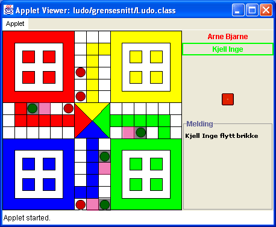

Sist oppdatert 16.02.02
Ludo-prosjektet vil pågå i lang framtid.
Nå er modellen til selve ludospillet så ferdig
som den kan bli. Ellers er grensesnittet fungerende, men
litt dårlig. Den største utfordringen blir
nok å lage serveren som spillene kan kobles opp
mot, slik at opptil 4 spillere kan spille mot hverandre
over internett.
En screenshot av ludo, tatt i Windows XP.

Hvis du vil, kan du laste ned hele kildekoden
til spillet som en
zip-fil eller en
jar-fil.
Du kan bruke det til akkurat hva du vil. Det som kanskje er
mest interessant er å bruke modellen, og lage et nytt
grensesnitt etter eget ønske.
Hvis du vil bruke kildekoden, kan det være lurt å
lese om
hvordan jeg har laget Ludo.
Følg denne linken hvis du heller vil
spille
Ludo.
Planen er som sagt at dette spillet skal knyttes opp mot en
server. Serveren skal lage et virtuelt spillerom, hvor mange
kan møtes og chatte med hverandre samtidig som de spiller
ludo. Det skal bli noe lignende til det man finner på
http://spill.start.no.